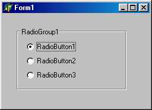
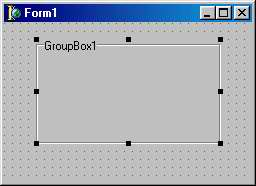
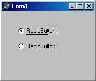
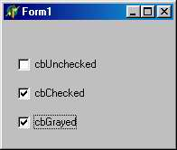

 TRadioGroup - группа зависимых переключателей
Компонент класса TRadioGroup представляет собой специальный контейнер, предназначенный для размещения зависимых переключателей класса TRadioButton. Каждый размещаемый в нем переключатель помещается в специальный список items и доступен по индексу, что упрощает обслуживание группы.
Свойства компонента:
|
property Columns: Integers; |
Определяет количество столбцов переключателей |
|
property Itemlndex: Integer; |
Содержит индекс выбранного переключателя |
|
property Items: TStrings; |
Содержит список строк с заголовками элементов. Добавление/удаление элементов достигается добавлением/удалением строк списка items (см. п. 16.3.1) |
После размещения компонента на форме он пуст. Чтобы создать в нем хотя бы один переключатель, следует раскрыть редактор списка Items и ввести хотя бы одну строку: строки Items используются как поясняющие надписи справа от переключателей, а их количество определяет количество переключателей в группе. Замечу также, что после создания компонента его свойство Itemlndex по умолчанию имеет значение -1, это означает, что ни один переключатель в группе не выбран. Если в момент появления компонента на экране в каком-то переключателе выбор уже должен быть установлен, необходимо на этапе конструирования с помощью окна Инспектора объектов или программно (например, в обработчике OnActivate формы) установить в свойство ItemIndex номер соответствующего переключателя (нумерация начинается с 0). Это же свойство позволяет программе проанализировать выбор пользователя, например:
case RadioGroupl.Itemlndex of
0: ...; //Выбран 1-й переключатель
1: ...; //Выбран 2-й переключатель
else
..... //Не выбран ни один переключатель
end;
Компонент RadioGroup удобен, если надписи кнопок имеют примерно одинаковую длину и если число кнопок в каждом столбце одинаково. В противном случае удобнее  использовать компоненты RadioButton, сгруппированные панелью GroupBox.
TGroupBox - панель группирования
Этот компонент служит контейнером для размещения дочерних компонентов и представляет собой прямоугольное окно с рамкой и текстом в разрыве рамки. Обычно с его помощью выделяется группа управляющих элементов, объединенных по функциональному назначению. Свойства и методы этого класса целиком унаследованы им от своих предков TCustomControi и TWincontrol
TRadioButton - зависимые переключатели
В отличие от TCheckBox компоненты TradioButton  представляют собой зависимые переключатели, предназначенные для выбора одного из нескольких взаимоисключающих решений. На форму (точнее, в компонент-контейнер) помещается по меньшей мере два таких компонента. Они могут иметь только два состояния, определяемых свойством Сhecked. Если в одном компоненте это свойство принимает значение True, во всех других компонентах, расположенных в том же контейнере, свойства Сhecked принимают значения False.
Помимо свойства checked компонент TRadioButton имеет еще одно специфичное свойство - Alignment, аналогичное такому же свойству TCheckBox. Как и в TCheckBox, программист не может изменять размеры и цвет круглого окошка компонента.
TCheckBox - независимый переключатель
 Независимый переключатель TCheckBox используется для того, чтобы пользователь мог указать свое решение типа Да/Нет или Да/Нет/Не совсем (в последнем случае в окошке компонента устанавливается флаг выбора, но само окошко закрашивается серым цветом). Это решение отражается в свойстве State компонента, доступном как для чтения, так и для записи. В составе диалогового окна может быть несколько компонентов TCheckBox. Состояние любого из них не зависит от состояния остальных, поэтому такие переключатели называются независимыми.
Типичное использование компонента:
if CheckBoxl.Checked then
else
Или:
case CheckBoxl.State of cbChecked :... ;
cbUnchecked:...;
cbGrayed :...;
end;
Свойства компонента:
|
type TLeftRight = (taLeftJustify, taRightJustify) ; property Alignment: TLeftRight; |
Определяет положение текста: taLeftJustify - с левой стороны компонента; taRightJustify - С Правой стороны |
|
property AllowGrayed: Boolean; |
Разрешает/запрещает использование состояния cbGrayed (Не совсем) |
|
ptoperty Caption: Strings |
Содержит связанный с компонентом текст |
|
property Checked: Boolean; |
Содержит выбор пользователя типа Да/Нет. Состояния cbUnchecked и cbGrayed отражаются как False |
|
type TCheckBoxState = (cbUnchecked, cbChecked, cbGrayed) ; property State: TCheckBoxState |
Содержит состояние компонента: cbUnchecked - нет; cbChecked - да; cbGrayed - не совсем |
Свойство color компонента фактически игнорируется, а свойства Height и width определяют размеры прямоугольника, в котором выводится связанный с переключателем текст, и не влияют на размеры прямоугольного окошка. Сам текст указывается в свойстве Caption.